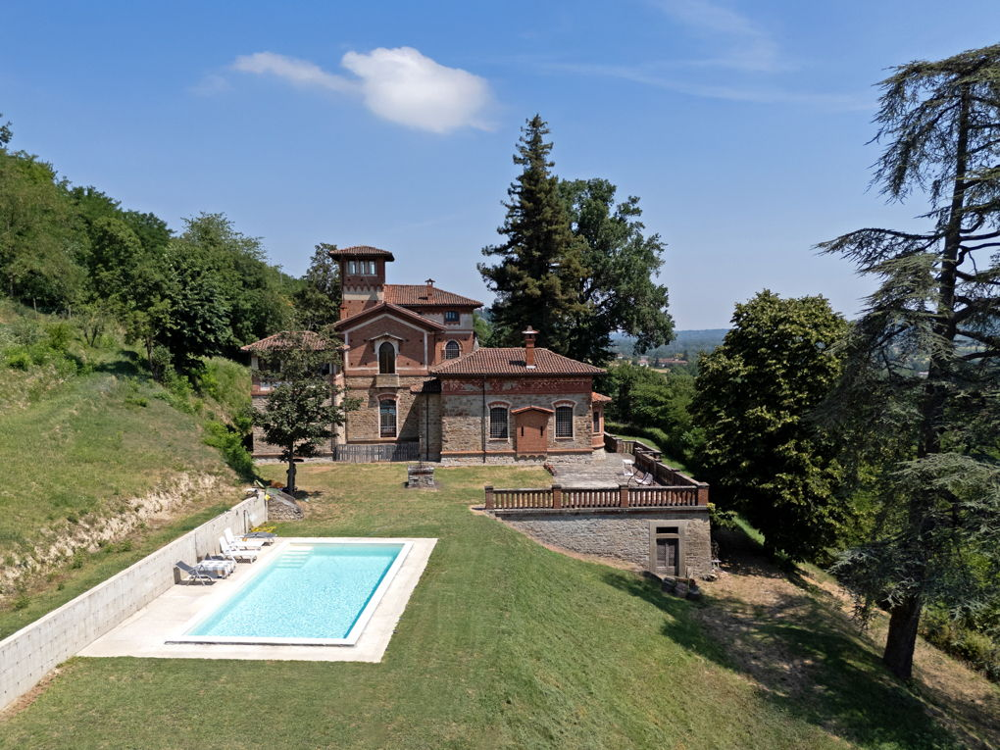

€1.100.000
Ovada, Piedmont, Italy
Open the listingPanoramic 18th-century Ovada villa free on four sides, with private garden swimming pool, stone cellar under brick vaults, frescoed and coffered ceilings, and a careful recent renovation that keeps period materials — exceptional Piedmont character under the €1.2M cap.
Opened 12 Sep 2026 via E&V expose a4b88891…; hasSwimmingPool=True; body confirms private garden pool; attic level autonomous with sleeping zone/bath; condition.veryGood; habitable now.